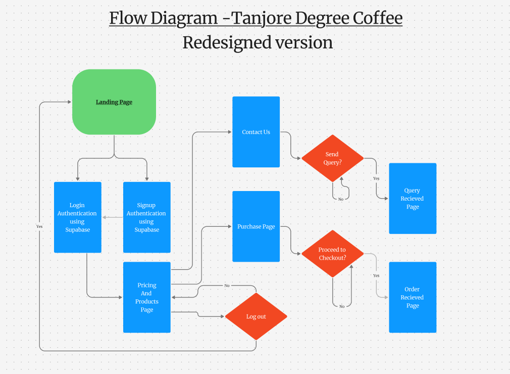

Internship Description: Website Redesign for Tanjore Degree Coffee
I had the privilege of redesigning the digital home of Tanjore Degree Coffee, a cherished brand known for its authentic South Indian filter coffee and refreshing rose milk. Our mission was to blend tradition with technology — creating a minimalist yet modern experience that honors the brand’s rich legacy.
This redesign features:
- Smooth parallax scrolling for a dynamic browsing experience
- Interactive hover effects and animated buttons for user engagement
- Fully responsive layouts tailored for mobile, tablet, and desktop users
- Visual storytelling through curated images and video assets
- Performance optimizations to ensure lightning-fast loading speeds
- Basic SEO integration for better discoverability
My goal was to build a digital experience as rich and memorable as a cup of Tanjore Degree Coffee itself. ☕
Project Details:
- Duration: April 2025 – May 2025
- Internship Name: Shadow Fox Web Development Internship
Tech Stack Used:
- HTML
- CSS
- JavaScript
- HTML5 Geolocation API (For 30km delivery radius)
- Supabase Auth (For login & signup functionality)
- Supabase Database (For storing contact form queries & order details)
Flow Diagram:
